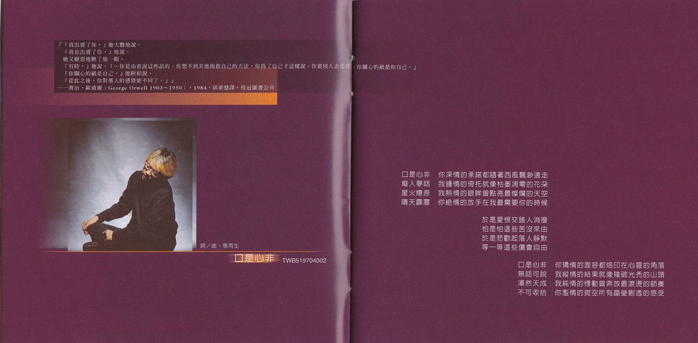

口是心非
文案
这两年，我都在淡水。朋友告诉我很多好玩的、好吃的、好看的、有趣的地方，有些我去过，有些没有；大半时间，我执意守在面海的一方小天地里，与这里的朝晖夕晕一同呼吸。常常，蓝得发亮的天空一早让我来不及揉开睡眼惺松，惊喜不已的一跃而起！一放眼望尽海天之际，层层白云作弄千奇百怪的造型，清风徐来，更伴着一片绿茸茸的草浪夹带四溢的原野纯香，那一刻，真教人不爽快大喝一声不行！但是，也有冬夜远从地球另一端来紧紧贴在窗外狰狞咆哮的狂风，「使天地战栗如同发了疟疾」9，那一刻，不着魔似的随之乱舞一阵亦不得也！于是我下放所有情感的起落，又讴歌所有爱恋的绝美。属于荒谬的罪愆，任由子夜银白如洗的月色洁净；属于神秘的口诀，便在夕阳金芒散尽的瞬间领略；属于纠缠不清的、似懂非懂、欲语还休的、交叉质询、欲辩忘言的、泛激情的、泛道德的种种，就丢给天龙八部里的无名老僧吧。
关于音乐，陈复明老师说：「这一次，听得出来每一个人都进步了。」我想这是很中肯的评断。我与这几个乐手合作了许多片子，把玩过数十首不同曲式的歌曲，这一次，我觉得大家的质感确实很统一。伟大的大提琴家卡萨尔斯（Pablo Casals）曾说：「世人说我拉琴像小鸟唱歌一样轻松，他们才不知道想让这只小鸟唱得好要花多少的工夫在其中！」我们花的工夫当然没他多，但是我相信至少听起来像只鸟在唱歌。这几个月算是我踏进这个圈子以来，最忙碌的一段时间。果陀的音乐剧，我的唱片，其他人的唱片，相互混乱，相互影响。从边「绿酒开芳颜」边工作中，我体会到很多事情，也见识了自己先天上的诸般顽劣，而不努力者恒被淘汰的铁则，更是血淋淋被不断辩证着。严格来说，「超越」，是我这次做唱片时最先考虑的事情。其次，是「诚实」。至于那些主不主流、另不另类、新不新潮、前不前卫的问题，我不需要也不想要僭越地代媒体界定。听听约翰·蓝农（John Lennon）的愤愤不平，「这整个音乐商业真是恐怖至极，完全是他妈的屈辱生涯！一个人必须彻底地羞辱自己，才能达到『披头四』过去的地位，而那正是我所深恶痛绝的…」或许，对于聆听者，我只想证明我完成了我的专辑。不管飞龙在天或是龙归大海，我尽过全力。虽然这些一年多来，小儿小女式的生命杂记，泰半浮之于多愁善感的词汇表皮，所谓「内行人看门道，外行人看热闹」，大可各取所需。哥德藉浮士德的口说「灵界并不关闭：只是你的感觉闭塞，你的心死灭！」，打开尘封你们赤子之心的瓶盖吧，让沉沦的世纪末「叭的放出光芒」！
最后，以洪醒夫在小说「散戏」里秀洁的话，与天下有心人共勉，「不管有没有观众，戏都应该好好演！」
「戏，就这样散了」…
张雨生 1997 月全蚀后一日
如果你要离开我

导引
如果太阳此刻熄灭光茫，地球上的人要八分钟后才会知道…
「Beatrice: 『I am gone, though I am here: there is no love in you: nay, I pray you let me go.』」—— William Shakespeare, Much Ado About Nothing, ACT
「泉涸，鱼相与处于陆，相呴以湿，相濡以沫，不如相忘于江湖。」—— 庄子 · 大宗师
歌词
如果你要离开我
我想我不会太难过
也许有一点点难过
至少不会在你的面前难过
Leave me alone
如果你要离开我
你不用对我说什么
就算我真的很心痛
至少脸上还挂着一幅笑容
Leave me alone
如果你要离开我
世界还是会向前走
也许它慢慢改变我
至少改变也不是坏的结果
Leave me alone
如果你要离开我
如果你要离开我
如果你要离开
请别到最后一刻才告诉我
Leave me alone
口是心非

导引
「『我出卖了你，』她大胆地说。
『我也出卖了你，』他说。
她又厌恶地瞧了他一眼。
『有时，』她说：『…你是由衷说这些话的。你想不到其他挽救自己的方法，你为了自己才这样说。你要别人去受苦，你关心的只是你自己。』
『你关心的只是自己，』他附和说。
『从此之后，你对那人的感情便不同了。』」
—— 乔治 · 奥威尔（George Orwell 1903 ~ 1950）· 1984 · 邱素慧译 · 桂冠图书公司
歌词
口是心非 你深情的承诺都随着西风飘渺远走
痴人梦话 我钟情的倚托就像枯萎凋零的花朵
星火燎原 我热情的眼眸曾点亮最灿烂的天空
晴天霹雳 你绝情的放手在我最需要你的时候
于是爱恨交错人消瘦
怕是怕这些苦没来由
于是悲欢起落人静默
等一等这些伤会自由
口是心非 你矫情的面容都烙印在心灵的角落
无话可说 我纵情的结果就像残破光秃的山头
浑然天成 我纯情的悸动曾奔放最滚烫的节奏
不可收拾 你滥情的抛空所有晶莹剔透的感受
Cappuccino

歌词
白净的纸 画上一个桶子 黑笔圈满许多心事
亲笔写上 完成它的日子 顺便藏起纷乱情思
时间过得快 爱得太奇怪 回忆频频追撞悬浮的未来
有欢聚有分开有甜蜜有无奈 直到我们一再目送彼此消失于人海之外
你让我想起那杯 Cappuccino 咖啡 我想我的愚昧都被你容在桶内
就像散开均匀香味浓郁的肉桂 我想我的眼泪已被你统统看见
白净的纸 让我若有所思 若有所失 若有所痴
玫瑰的名字
导引
「啊啊！这一种譬喻，值得什么？…因为说得出譬喻得出的悲怀，还不是世上最伤心的事情呀…」1
—— 郁达夫 · 郁达夫散文集 · 页 59 · 阳明书局
「Now I know that good is cause of love and that which is good is defined by knowledge... Now I know, as the doctor says, that love can harm the lover when it is excessive. 」
—— Umberto Eco, The Name Of The Rose, translated from Italian by William Weaver
歌词
玫瑰多情也多刺 竟与妳似曾相识
有多少次我尝试写首诗
留下妳那婀娜多姿的样子
有时候娇横伤人 有时候娇柔依人
我只能用最奢侈的玻璃
为妳筑起不惧风雨的天地
只要能够陪着妳我都愿意
我就是妳忠实的园丁
只要能够想着妳我就欢喜
即使妳宁可自由自在呼吸那一窗星星
名字背过又忘记 符号充满了神秘
原在梦里忽而又中世纪
我像圣堂下为妳禁欲的僧侣
河
导引
「…豹子扑拢去，摸到媚金的额，摸到脸，摸到口；口鼻只剩了微热…临死的媚金听到这话，知道豹子迟来的理由是为了羊，并不是故意失约了，对于自己在失望中把刀陷进胸膛里的事是觉得做错了…豹子是把自己的胸也袒出来了，他去拔刀。陷进去很深的刀是用了很大的力才拔出的。刀一拔出血就涌出来了，豹子全身浴着血。豹子把全是血的刀子扎进自己的胸脯，媚金还能见到就含笑死了…」
——沈从文 ·「媚金 · 豹子 · 与那羊」· 沈从文小说选 Ⅰ · 洪范书店
歌词
当你平躺下来 我便成了河
回绕你的颈间 在你唇边干涸
窃想你的眼神 我恋恋不舍
聚为一泓泉水 深邃清澈
当爱燎原成灾 你徐徐侧身
堆积肥沃河床 我是朝圣的人
我是客途的雁 却一往情深
从此无意追逐 新绿的春
任我流吧 层层冰川
亿年换几吋 我也宁愿这么盼
等到昏黄 等到痴傻
等着公主吻青蛙
魔咒缓缓退尽 你笑的厉害
天曾缺掉的角 无非此等神采
我将残翼放下 从河中走来
你正颔首告知 这里有爱
爱情…
…的图案

导引
「纪德：『关于床我将对你说什么呢？』2
洛夫：『我们躺如雨后的田亩』3
林燿德：『我们共同躺成半球形的雪』4
杨唤：『哎，我再也不能入睡，我再也不能入睡。』5
冯承植：『在一间生疏的房里，他白昼时是什么模样，我们都无从认识，…』6」——诗的对话7
「但如果你在惧怯中只想寻求爱的平安和爱的愉悦，
那么不如遮掩着你的裸体，离开爱的打谷场，进入那无季节的世界，在那儿你将欢笑，但非全心的笑，你将哭泣，却非尽情的哭。…
除了成全它自己，爱没有别的欲望。」
—— 卡里 · 纪伯伦 (Kahlil Gibran 1883 ~ 1931) · 先知 (The Prophet) · 王季庆译 · 纯文学
歌词
请你给我一个吻吧 我便不会再惧怕
我将贴身藏起酥麻 抛开所有的牵挂
请你给我一个拥抱 我便情愿被燃烧
我将秘密进行浮雕 歧视所有的依靠
最美丽的季节里我们初相遇
就在至高的峰顶我们风化了爱情
请你给我一个眼神 我最痴想的天真
转开我发热的身体 足足地球的半径
请你给我一个呼唤 我最宠幸的柔软
遮蔽我前方的视野 可是爱情的图案？
请你给我一滴泪水 附着魔咒的甘泉
当我不慎任她下坠 赤道也叠起了雪
请你给我一种蹙眉 偷火的人也后悔
要从绚烂走回平凡 才见到爱情的图案
随你
导引
「从民子到雪子对于他的爱的闪电，划过佐山的心里。」
—— 川端康成（1899 ～ 1972）· 母亲初恋的人 · 伊豆的舞娘 —— 川端康成十五篇短篇精选集 · 黄玉燕译「"But man is not made for defeat," he said. "A man can be destroyed but not defeated."…
"Don't think, old man," he said aloud. "Sail on this course and take it when it comes."」
—— The Old Man And The Sea, Ernest Hemingway, 敦煌书局
歌词
我常常觉得对你充满了绮想
这是不是个好现象
我常常逆向思考对你的需要
答案仍然是个问号
当我见到你却把一切都抛掉不再自寻烦恼
只想让每一分一秒都很美妙
于是我每一个动作都是配合你
我的心随你牵引随你欢喜而欢喜
随你爱随你恨随你一意孤行我都愿意
于是你每一个动作都被我临摹
我的梦随你拥有随你哀愁而哀愁
随你痴随你怨随你漫天遨游我不退缩
我已经到了老大不小的年龄
这事实一定要认清
我已经条条列举冲动的下场
结果也够让我惊吓
当我见到你却把一切都抛掉不再自寻烦恼
只想让每一分一秒都很美妙
神采

导引
「更漫长的永昼来临以前
让我 趁着这些微的极光
看清妳被雪地晒红的脸」
—— 林燿德 · 南极记 · 银碗盛雪 · 洪范书店
歌词
你的黑发 你的双唇 你的眼眸
在我眼前竟是这般米罗
你的温柔 你的轮廓 你的洒脱
在我心底都是飘逸水墨
不知怎么样开口 有太多的感动
因为太难以形容 只能对着自己说
神采 我最爱
躲在梦里喃喃念出来
神采 我最爱
藏在手心迟迟打不开
密麻错落的情怀
你的言语 你的欢声 你的呼吸
播放一种巴洛克的旋律
你的步伐 你的转身 你的沉静
框进画里印象派的意境
在黄昏融化了世界的色彩以前

导引
Note..朋友们频频列队结婚，我也被红色喜帖炸得不亦乐乎。
这当然无关乎流行，只是到了年纪。
从纯吃喝閙酒的宾客，一路做遍招待、司机、甚至伴郎（搞过乌龙、也閙了笑话），体恤他们在这样一种透过古老风俗迷信串接的典礼仪式当中，即心力交瘁，又要笑脸迎人的苦处。
不过，那些笑意毕竟发自肺腑，诚如他们所言，结合是两个人的事、结婚却是两家子人的事。祝福他们！
歌词
在黄昏融化了世界的色彩以前
我们的情绪达到至美的极限
当月光歌颂着绝伦的天上诗篇
我们的欢乐涌现节庆的境界
所以你说你情愿放弃自己的那一片天
所以你说你情愿走向生命的另一回圈
相思会醉 爱恋能痴
无可比拟的激情几回
一对指戒 一诺百年
一座从此 恬适的伊甸园？
在星辰造型出神圣的几何以前
我们的心跳冲破古老的高原
当黎明破晓之姿粉刷彤霞一片
我们的视野才拓展到地平线
所以你说你情愿挥别憧憬的爱情唯美
所以你说你情愿迎接繁复的柴米油盐
若我告诉你其实我爱的只是你

导引
「当有人欣赏你的作品
很可能他误解了。
很可能你对你自己经验的发掘
还没深到只有自己理解的程度。」
—— 罗智成 · 罗智成诗集「宝宝之书」· 第 12
「『哈哈哈！』阿 Q 十分得意的笑。
『哈哈哈！』酒店里的人也九分得意的笑。」
—— 鲁迅 · 阿 Q 正传 · 第三章末两行
歌词
你让我惊喜 你的自信
你让我讶异 你的贴心
你已不是你 当你急于要改变自己
若我告诉你其实我爱的只是你
就像世界再也找不到第二个你
若我告诉你其实我爱的只是你
你就是你就是你独一不二的你
（你）那么甜蜜的眼睛
你那么率性的言语
喔你只是你 当你展现最好的自己
你改变发型 我不在意
你追求流行 我随便你
但你若不是你 这感情便走进单行道里
（你）就在这里 Oh Baby
我也在这里 你别焦急
何不就把你 淋漓尽致地秀出去
你让我惊喜 你的自信
你让我讶异 你的贴心
我要你只是你 因为我爱的就是你
致谢
感谢
丰华唱片的鼎力相助，陈老师、小彭、邬师兄、新玲等人辛苦的挑歌；国丰的任劳任怨及一手绝妙的烹饪调酒功夫；
弦乐班的久别重逢、解瑄的绝美姿态、中岳的放浪形骸、管乐班的契合于无形、文丽的帮忙、阿琴的苦茶以及白金录音室这一阵子几乎朝夕相处的员工助理们。
特别感谢
小 K，我知道，这回一定又有很多「时也！命也！」的遗憾，但是，距离我们企望的国际水准应该越来越近了。
Koji, You are the wonderful music genius and great partner. It's a pleasure to work with you.Thanks to your kind family (Tomoko & Iruma).
豆子，真不敢相信我们已合作超过十年！听你恣意黑白讲、看你快意喝酒都是很爽的，祝你与豆嫂好梦快圆！
同学，我们是相见恨晚，幸好大器晚成。这张堪称你的代表作，尤其是「呜～呜～」的部份，当然不会是最后一张。还有，我不会忘记那些笑话的。
Bell，即使妳对某些歌依然存有偏见，但妳必须承认，我做的很用心！
献给三一8
1. 出自《还乡记》第六节 ↩
2. 安德烈 · 纪德 (André Paul Guillaume Gide 1869 ~ 1951) · 地粮 · 盛澄华译 · 上海译文出版社 ↩
3. 洛夫 (1928 ~ 2018) · 去夏的汗 · 因为风的缘故 · 江苏凤凰文艺出版社 ↩
4. 林燿德 (1962 ~ 1996) · 上邪注 · 银碗盛雪 · 洪范书店 ↩
5. 杨唤 (1930 ~ 1954) · 雨 ↩
6. 冯承植 (1905 ~ 1993) · 我们有时度过一个亲密的夜 ↩
7. 这里使用的是的集句的手法 ↩
8. 「三一」是雨生宠物狗的名字 ↩
9. 纪弦 (1913 ~ 2013) · 狼之独步 ↩